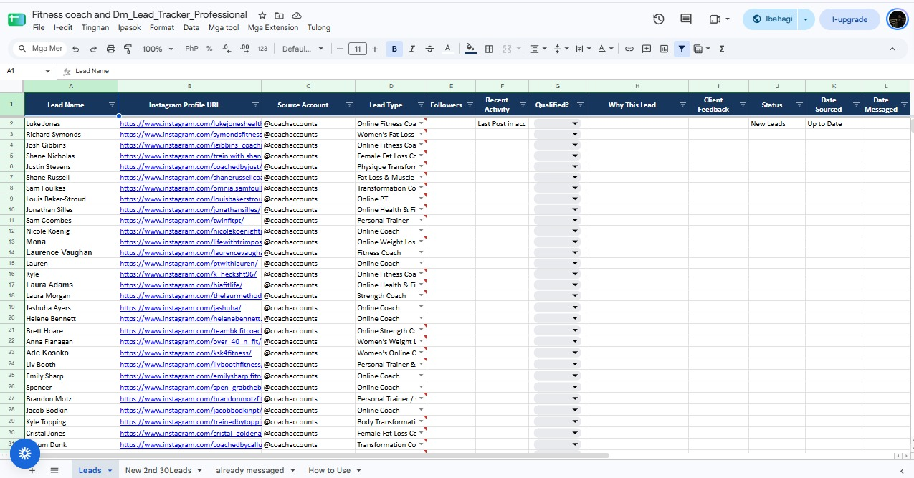
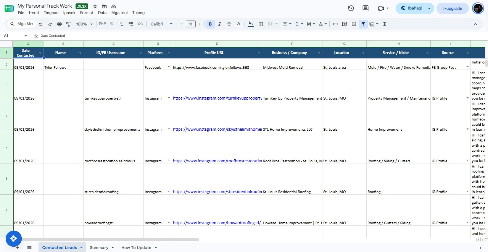
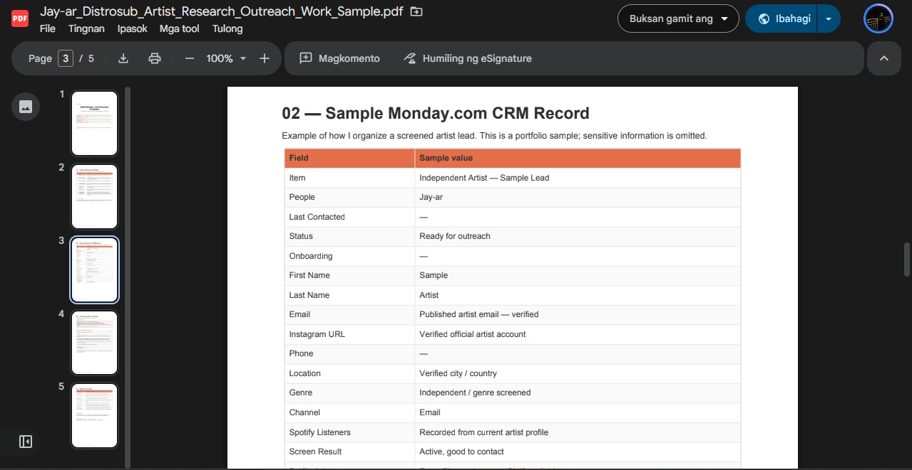
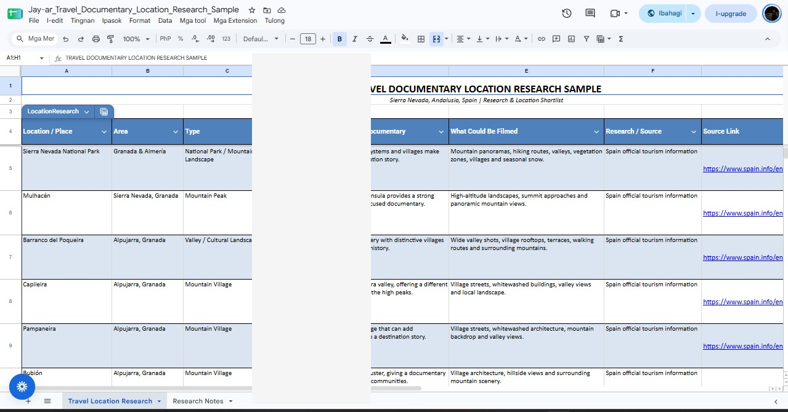

Lead Generation
Finding and building prospect lists based on clear client criteria.
I help businesses find, research, qualify, verify, and organize prospects so the next step in outreach is clear and actionable.
I’m Jay-ar, a detail-oriented Lead Generation & Research VA with hands-on experience in prospect research, qualification, contact verification, outreach support, follow-ups, and lead tracking.
I’m comfortable following detailed SOPs and qualification criteria, checking public information across multiple sources, identifying relevant prospects, and maintaining organized trackers that are useful for the next step in the sales or outreach process.
I’m looking for a long-term opportunity where I can consistently support lead generation, research, qualification, and outreach operations.
Built for teams that value accurate prospect data and consistent execution.
Finding and building prospect lists based on clear client criteria.
Researching people, companies, social profiles, and relevant public information.
Checking prospects against qualification rules and identifying relevant leads.
Researching publicly available contact details and validating source information.
Social prospecting, decision-maker research, and outreach support.
Google Sheets, Excel, Monday.com, CRM-style updates, statuses, duplicates, and follow-ups.
I work best inside clear processes, qualification rules, and organized trackers.
Hands-on work across lead generation, research, outreach support, and data operations.
Lead generation, online research, prospect qualification, contact verification, data organization, spreadsheet management, and research/data cleanup.
Independent artist research, qualification, public contact research, personalized outreach, Monday.com CRM updates, follow-up tracking, and SOP-based workflow execution.
Instagram prospect research, qualification, DM outreach, follow-ups, appointment-setting support, and Google Sheets tracking.
Data entry, record organization, accuracy checking, and structured information management.
Professional online communication, customer support, and message-based assistance.
Selected examples of lead research, prospect tracking, verification, and outreach systems.
Broader portfolio of research, qualification, data organization, and prospecting work.
Open sample ↗ 02 · RESEARCHStructured local prospect research and lead tracking.
Open sample ↗ 03 · B2B RESEARCHProspect and professional information verification workflow.
Open sample ↗ 04 · INSTAGRAMInstagram prospect research, qualification, outreach, and tracking.
Open sample ↗ 05 · OUTREACHArtist research, qualification, contact research, and outreach workflow.
Open sample ↗ 06 · VERIFICATIONPublic-source research and contact verification sample.
Open sample ↗Clean trackers and research records help keep outreach organized and actionable.




A simple process designed to make the next step easier for the client.
Follow the client’s criteria, SOPs, and desired lead profile.
Find relevant prospects and verify public information across sources.
Check each prospect against the required criteria.
Keep trackers, statuses, notes, and follow-ups clean and actionable.
I’m available for full-time or part-time remote work involving lead generation, research, qualification, data management, and outreach support.
Email Jay-ar ↗